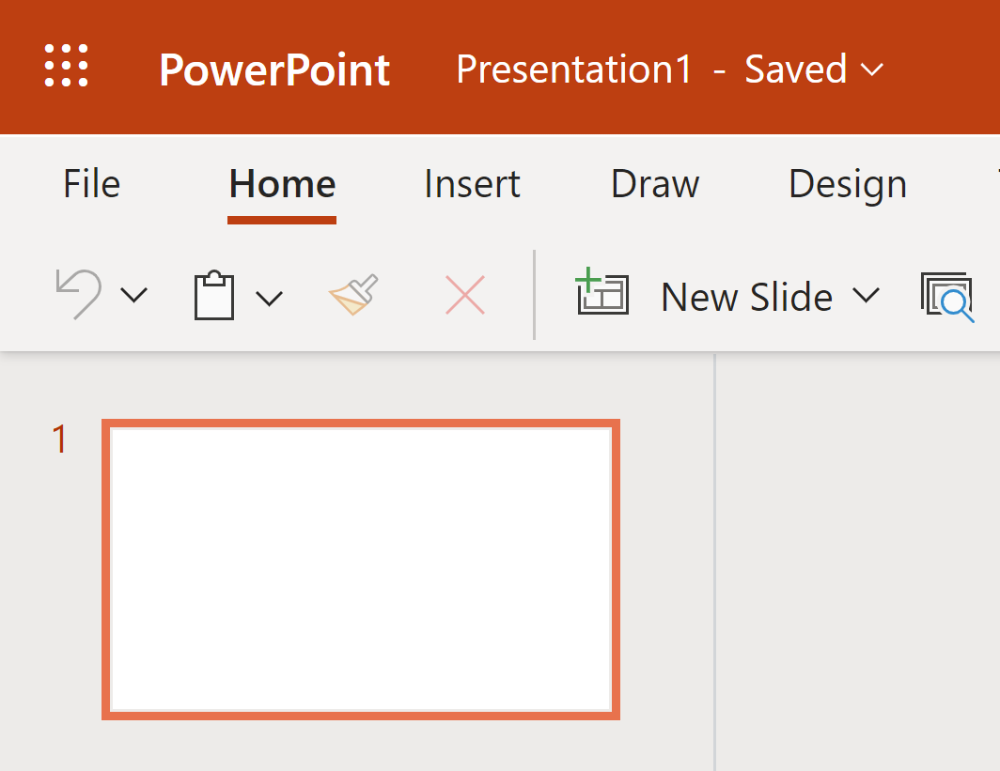
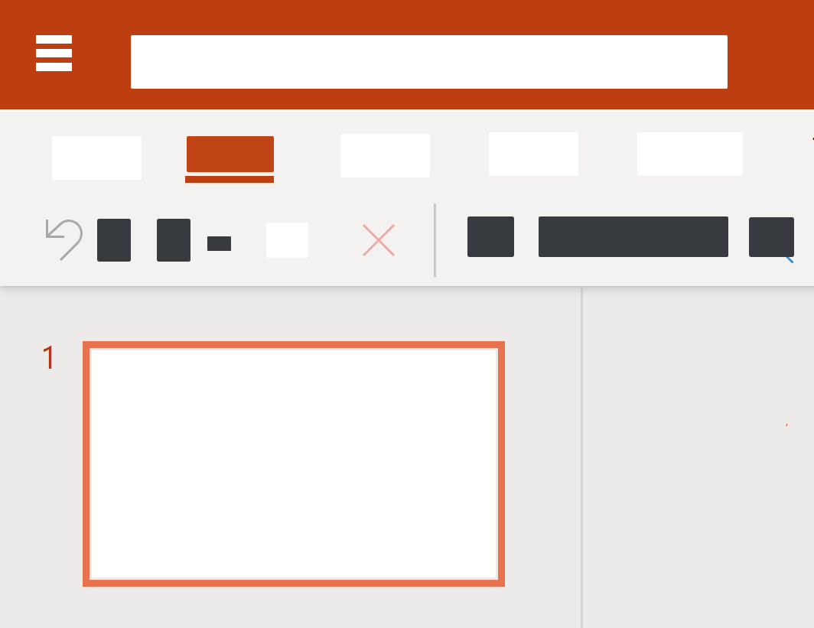

Simplified User Interface
A simplified user interface (SUI) is a visual representation of a software interface that removes unimportant elements and reduces them to simpler shapes. Check how to create SUI and where to use it.
It is hard to imagine any complicated system documentation without screenshots of user interface. However, software updates are very frequent. These regular updates, coupled with localization processes, can make documentation work really challenging and time consuming.
How can we face these challenges without having to constantly update supporting content?
What is SUI?
| normal interface | simplified interface |
|---|---|
|

|

|
The elements that are fundamental to the instructions or for the user to understand are purposefully kept visible and the SUI graphics serve as a visual aid to support the instructional content given, via the sub- or figure text.
SUI graphics allow for easy-to-follow instructions which enable the reader to get to the point quickly and to avoid distractions.
Why to use it?
Using a simplified user interface in help documentation can aid in user success by giving them only the information they must have in order to be successful, increasing their success and satisfaction with a product.
Keeping content up to date is one of the biggest challenges faced by technical communicators today. If we look to software as an example, new features and functionalities are being added frequently. And with each feature addition to the user interface, the instructions are at risk of becoming quickly out of date.
Simplified user interface graphics can play a strategic role in keeping the documentation updated. The removal of a button or addition of a feature will easily confuse the user if this change is not reflected in a screenshot. However, a simplified user interface graphic can often sustain multiple software versions and updates before needing further updates. The simplified design is more forgiving to minor interface changes and additions as it is already an abstract representation of the interface.
During the localization process, it can be time-consuming and expensive to create screenshots and graphics for each locale. Yet, the localization of onboarding materials and other graphics can be trivial for any organization that wants to be successful internationally.
Most technical writers know the effort it takes to create and manage unique screenshots for each language. In order to simplify this task, you can design the content to use SUI images instead of language-specific screenshots. The same graphic can often be repurposed across multiple languages with little to no adjustment. Additional information or instructions can be conveyed through the sub- or figure text.
SUI version
How to create SUI?
Creating a simplified user interface (SUI) graphic is easier than you think. The best way is to begin with a screenshot and then transform it. To do this, you need screen capture and image editing software. I use Snagit in my daily work, as it has both of these functions. Additionally, it also has Auto Simplify feature that recognizes shapes and text and then automatically covers them with the themed elements.
- Capture a screenshot of the user interface you want to turn into a SUI graphic and open it in the chosen editor.
- Crop the screenshot to the dimensions of your desired output.
-
Cover up and remove visual noise like unrelated text, menus, buttons, or tool
tips to reduce the complexity of the image and focus attention on the important
parts.
Tip: Use the color palette which works with your interface.
-
Save your file as a .png to be used in your documentation.
Tip: It is also recommended to save your final image as a project file type. It allows you to reopen the project to edit and adjust the image later on. This makes updating your image easy so you won’t need to recreate your SUI graphic every time.